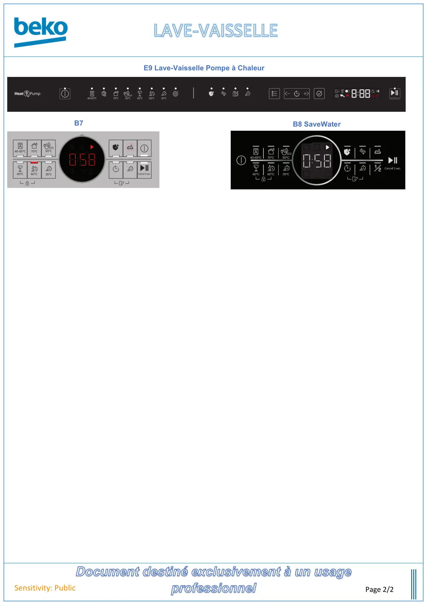

Lave vaisselle page accueil Page 2

Document destiné exclusivement à un usageprofessionnelSensitivity: PublicPage 2/2B7B8 SaveWaterE9 Lave-Vaisselle Pompe à Chaleur
1 / 1


Gros électroménager
Ressources techniques SAV — Beko · Grundig · Whirlpool · Hotpoint · Indesit.
